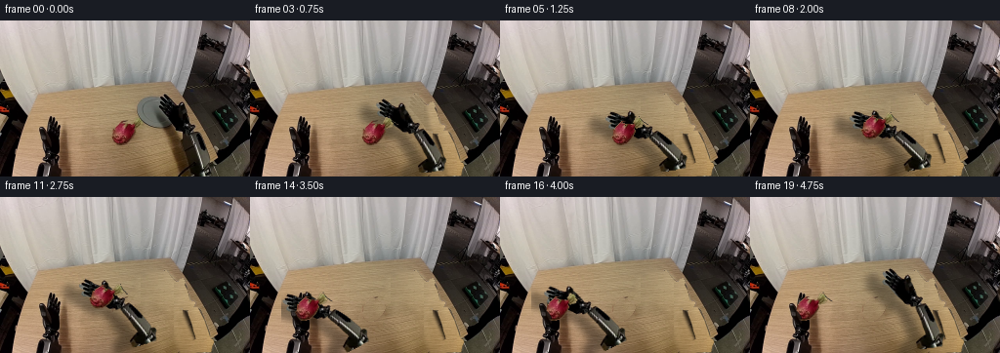
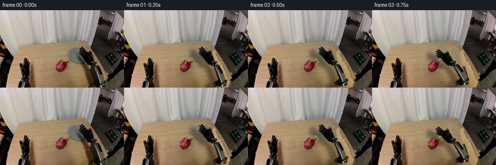
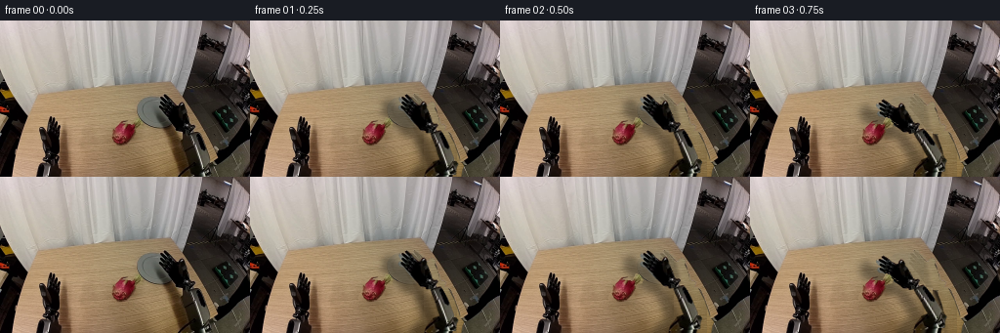
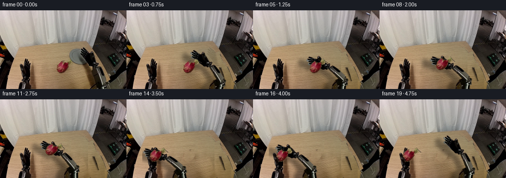

CODING AGENTS AS PIXEL WORLD MODELS
traex/GPT-6.1-Sol · common50_0038
点击播放 · 原生 RGB 像素
逐轮保存的候选
回放视频、检查图与代码变化。
每份候选均可单独播放。实际图片检查记录在下方工具轨迹中。
候选 01播放与检查图
点击播放 · 原生 RGB 像素


展开代码变化
--- 上一保存版本
+++ 本次保存版本
@@ -0,0 +1,229 @@
+"""Deterministic pixel-textured, articulated pick-and-handover animation."""
+from pathlib import Path
+import math
+import numpy as np
+from PIL import Image, ImageDraw, ImageFilter
+from artifact_io import save
+
+ROOT=Path(__file__).resolve().parent
+W,H=256,160
+S=3
+
+def poly(points):
+ m=Image.new('L',(W*S,H*S),0)
+ ImageDraw.Draw(m).polygon([(round(x*S),round(y*S)) for x,y in points],fill=255)
+ return np.array(m.resize((W,H),Image.Resampling.LANCZOS),dtype=float)/255
+
+def blur(m,r):
+ return np.array(Image.fromarray(np.uint8(np.clip(m,0,1)*255)).filter(ImageFilter.GaussianBlur(r)),dtype=float)/255
+
+def rot(a):
+ return np.array([[math.cos(a),-math.sin(a)],[math.sin(a),math.cos(a)]])
+
+def layer(rgb,mask):
+ return Image.fromarray(np.dstack([rgb,np.uint8(np.clip(mask,0,1)*255)]).astype(np.uint8),'RGBA')
+
+def warp(src,R,t):
+ ri=R.T
+ z=-ri@np.array(t)
+ return src.transform((W,H),Image.Transform.AFFINE,tuple([ri[0,0],ri[0,1],z[0],ri[1,0],ri[1,1],z[1]]),Image.Resampling.BICUBIC)
+
+def composite(im,src):
+ a=np.array(src).astype(float)
+ return im*(1-a[:,:,3:]/255)+a[:,:,:3]*a[:,:,3:]/255
+
+def ease(t):
+ t=np.clip(t,0,1);return t*t*(3-2*t)
+
+def path(i,keys):
+ for (f0,p0),(f1,p1) in zip(keys[:-1],keys[1:]):
+ if i<=f1:
+ u=ease((i-f0)/(f1-f0))
+ return np.array(p0)*(1-u)+np.array(p1)*u
+ return np.array(keys[-1][1],dtype=float)
+
+
+def main():
+ rgb=np.array(Image.open(ROOT/'first_frame.png').convert('RGB'))
+ f=rgb.astype(float)
+ yy,xx=np.mgrid[:H,:W]
+ r,g,b=f.transpose(2,0,1)
+ # Silhouettes traced numerically from the source RGB. Gaps between the
+ # digits remain background; every moving link uses a rigid transform.
+ wood=(r-g>13)&(g-b>14)&(f.mean(2)>65)
+ hand_envelope=poly([(167,74),(171,75),(176,83),(181,87),(183,86),(184,83),
+ (188,83),(190,86),(189,90),(191,94),(193,100),(194,105),(198,106),
+ (200,108),(200,111),(198,114),(195,116),(188,116),(182,113),
+ (179,109),(177,107),(173,103),(169,98),(166,93),(163,92),(161,91),
+ (160,88),(162,86),(165,87),(164,85),(162,83),(161,80),(162,77),
+ (165,77),(168,80),(167,77)])
+ # Pixels at the anti-aliased perimeter retain the original shading.
+ hand_mask=hand_envelope*np.where(wood,0.0,1.0)
+ hand_mask=np.maximum(hand_mask,poly([(172,88),(182,88),(188,91),
+ (192,104),(193,107),(196,109),(196,113),(191,115),(184,112),(179,106),(175,99)]))
+ fore_mask=poly([(195,113),(202,113),(205,118),(209,126),(212,135),
+ (215,144),(215,149),(208,153),(201,150),(200,143),(198,137),
+ (197,132),(195,126),(193,121),(192,117)])
+ upper_mask=poly([(204,144),(213,144),(218,146),(219,149),(217,153),
+ (216,159),(191,160),(190,152),(194,149),(199,146)])
+ # The dragonfruit body and its green scales are copied, not redrawn.
+ fruit_mask=poly([(125,102),(129,104),(131,106),(136,105),(138,100),
+ (141,97),(144,98),(147,101),(149,104),(152,105),(152,107),
+ (145,109),(139,111),(139,115),(137,118),(135,121),(131,125),
+ (128,128),(123,129),(118,126),(116,123),(114,120),(114,118),
+ (116,116),(116,111),(118,107),(122,105)])
+ # Remove only background-colored perimeter pixels of the cutout.
+ fruit_special=((r-g>36)|(g-b>37)&(r-g<23))
+ fruit_mask*=np.where(fruit_special|(f.mean(2)<80),1,0)
+ fruit_mask=np.maximum(fruit_mask,poly([(123,106),(129,108),(134,108),
+ (137,111),(136,117),(131,123),(125,126),(119,123),(117,118),(118,111)]))
+ fruit_mask=blur(fruit_mask,.23)
+ hand_src=layer(rgb,hand_mask)
+ fore_src=layer(rgb,fore_mask)
+ upper_src=layer(rgb,upper_mask)
+ fruit_src=layer(rgb,fruit_mask)
+
+ # Recover the occluded wooden tabletop from neighboring rows of the same
+ # image. Color trends are fit only to unobstructed wood in this frame.
+ valid=(xx>=77)&(xx<=173)&(yy>=68)&wood&(f.mean(2)>105)
+ valid&=~((xx>136)&(yy<112))
+ valid&=~((xx>112)&(xx<151)&(yy>99)&(yy<132))
+ def features(x,y):
+ x=(x-125)/60.;y=(y-115)/50.
+ return np.stack([np.ones_like(x),x,y,x*x,y*y,x*y,x*x*x,y*y*y],-1)
+ X=features(xx,yy)
+ coef=np.linalg.lstsq(X[valid],f[valid],rcond=None)[0]
+ fitted=np.clip(X@coef,0,255)
+ clean=fitted.copy()
+ # Preserve fine horizontal wood grain rather than a featureless fill.
+ for y in range(68,H):
+ residual=f[y,78:112]-fitted[y,78:112]
+ for x in range(110,230):
+ clean[y,x]+=residual[(x-110)%len(residual)]*.75
+ clean=np.clip(clean,0,255)
+ edge=143.5+.572*yy
+ # The area past the tabletop is the dark floor; recover it from nearby
+ # unobstructed floor pixels, retaining the static perspective edge.
+ for y in range(70,H):
+ for x in range(172,230):
+ if x>edge[y,x]:
+ sx=min(251,max(x+23,int(edge[y,x])+23))
+ clean[y,x]=f[y,sx]
+ shadow_region=poly([(153,75),(171,76),(179,83),(184,105),(186,115),
+ (200,147),(203,160),(183,160),(171,125),(168,115),(151,110),
+ (141,108),(138,98),(138,87),(141,81)])
+ shadow_region=blur(shadow_region,1.5)
+ arm_union=np.maximum.reduce([hand_mask,fore_mask,upper_mask])
+ arm_hole=blur(arm_union,0.6)
+ arm_hole=np.maximum(arm_hole,arm_union)
+ # Smoothly fill the cast shadow as well as the sprite footprint.
+ repair=np.maximum(arm_hole,shadow_region)
+ bg=f*(1-repair[:,:,None])+clean*repair[:,:,None]
+ fruit_hole=np.maximum(fruit_mask,blur(fruit_mask,1.35))
+ fruit_hole=np.maximum(fruit_hole,poly([(115,115),(135,116),(139,124),
+ (135,130),(117,131),(110,124)])*.55)
+ bg=bg*(1-fruit_hole[:,:,None])+clean*fruit_hole[:,:,None]
+ # Keep reference texture outside the tabletop repair zones unchanged.
+ Image.fromarray(np.uint8(np.clip(bg,0,255))).save(ROOT/'background_candidate.png')
+ Image.fromarray(np.uint8(fruit_mask*255)).save(ROOT/'fruit_cutout_mask.png')
+
+ base=np.array([145.,350.])
+ E0=np.array([207.,146.]);P0=np.array([193.,115.]);G0=np.array([179.,97.])
+ C0=np.array([126.,114.])
+ L1=np.linalg.norm(E0-base);L2=np.linalg.norm(E0-P0)
+ a0=math.atan2(*(E0-P0)[::-1])
+ u0=math.atan2(*(base-E0)[::-1])
+ def kinematics(p):
+ v=p-base;d=np.linalg.norm(v);u=v/d
+ c=(L1*L1-L2*L2+d*d)/(2*d)
+ h=math.sqrt(max(0,L1*L1-c*c))
+ e=base+c*u+h*np.array([-u[1],u[0]])
+ a=math.atan2(*(e-p)[::-1])-a0
+ return e,a
+ # Inverse position solve for the palm's attachment point. Both link
+ # lengths and all sprite dimensions are invariant through the sequence.
+ def solve_grasp(goal,guess=None):
+ p=np.array(goal)+np.array([17.,13.]) if guess is None else guess.copy()
+ for _ in range(24):
+ e,a=kinematics(p);R=rot(a);v=p+R@(G0-P0)-goal
+ if np.linalg.norm(v)<1e-5:break
+ jac=np.empty((2,2))
+ for j in range(2):
+ pj=p.copy();pj[j]+=.02
+ ej,aj=kinematics(pj)
+ jac[:,j]=(pj+rot(aj)@(G0-P0)-(p+R@(G0-P0)))/.02
+ try:dp=np.linalg.solve(jac,v)
+ except np.linalg.LinAlgError:dp=v
+ p-=np.clip(dp,-8,8)
+ e,a=kinematics(p)
+ return p,e,a
+
+ keys=[(0,(179,97)),(2,(163,96)),(4,(138,103)),(6,(126,114)),
+ (7,(126,114)),(9,(126,102)),(11,(104,101)),(13,(72,106)),
+ (14,(58,113)),(15,(58,113)),(16,(69,107)),(18,(145,92)),(19,(155,94))]
+ pickup_p,pickup_e,pickup_a=solve_grasp(C0)
+ release_center=np.array([58.,113.])
+ _,_,release_a=solve_grasp(release_center)
+ release_fruit_R=rot(release_a-pickup_a)
+ frames=[rgb.copy()]
+ prev=P0.copy()
+ for i in range(1,20):
+ grasp=path(i,keys)
+ p,e,a=solve_grasp(grasp,prev);prev=p
+ R=rot(a)
+ h_img=warp(hand_src,R,p-R@P0)
+ fore_img=warp(fore_src,R,p-R@P0)
+ upper_angle=math.atan2(*(base-e)[::-1])-u0
+ U=rot(upper_angle)
+ upper_img=warp(upper_src,U,e-U@E0)
+ carried=7<=i<=15
+ deposited=i>=16
+ if carried:
+ fruit_center=grasp
+ fruit_R=rot(a-pickup_a)
+ elif deposited:
+ fruit_center=release_center
+ fruit_R=release_fruit_R
+ else:
+ fruit_center=C0;fruit_R=np.eye(2)
+ fruit_img=warp(fruit_src,fruit_R,fruit_center-fruit_R@C0)
+ canvas=bg.copy()
+ # The initial shadow gradually yields to the moved-arm shadow.
+ # All shadows are lighting layers, not transformations of scenery.
+ reference_shadow=shadow_region*np.clip(1-i/5,0,1)*.38
+ canvas=canvas*(1-reference_shadow[:,:,None])+f*reference_shadow[:,:,None]
+ combined=np.maximum.reduce([np.array(h_img)[:,:,3],np.array(fore_img)[:,:,3],np.array(upper_img)[:,:,3]])/255.
+ sh_img=Image.fromarray(np.uint8(combined*255)).transform((W,H),Image.Transform.AFFINE,(1,0,18,0,1,-5),Image.Resampling.BILINEAR).filter(ImageFilter.GaussianBlur(3.1))
+ sh=np.array(sh_img,dtype=float)/255
+ table=(xx<edge)&(xx>31)&(yy>68)
+ sh*=table*.34
+ canvas*=1-sh[:,:,None]
+ # Fruit contact shadow is attached to the table only while supported.
+ height=0 if i<8 or deposited else max(0,114-fruit_center[1])
+ cx,cy=fruit_center
+ if i<8 or deposited or height<15:
+ contact=np.exp(-((xx-cx)/11)**2-((yy-(cy+14+height*.35))/3)**2)
+ contact*=.14*math.exp(-height/8)
+ canvas*=1-contact[:,:,None]
+ canvas=composite(canvas,upper_img)
+ canvas=composite(canvas,fore_img)
+ canvas=composite(canvas,h_img)
+ canvas=composite(canvas,fruit_img)
+ # On deposit the stationary left thumb is in front of the lower-left
+ # skin, and the fruit rests directly against the original open palm.
+ if i>=14:
+ left_front=poly([(42,113),(45,115),(49,118),(52,122),(53,125),
+ (48,126),(43,121)])
+ neutral=~wood
+ left_front*=neutral
+ fac=ease((i-13)/2)
+ canvas=canvas*(1-left_front[:,:,None]*fac)+f*left_front[:,:,None]*fac
+ frames.append(np.uint8(np.clip(np.rint(canvas),0,255)))
+ frames=np.stack(frames)
+ assert np.array_equal(frames[0],rgb)
+ save(frames,ROOT)
+ np.save(ROOT/'candidate_frames.npy',frames)
+ print('Saved',frames.shape,frames.dtype)
+ print('Frame mean absolute transitions:',np.round(np.abs(frames[1:].astype(float)-frames[:-1]).mean((1,2,3)),2).tolist())
+
+if __name__=='__main__':main()
候选 02播放与检查图
点击播放 · 原生 RGB 像素


展开代码变化
--- 上一保存版本
+++ 本次保存版本
@@ -21,7 +21,7 @@
return np.array([[math.cos(a),-math.sin(a)],[math.sin(a),math.cos(a)]])
def layer(rgb,mask):
- return Image.fromarray(np.dstack([rgb,np.uint8(np.clip(mask,0,1)*255)]).astype(np.uint8),'RGBA')
+ return Image.fromarray(np.dstack([rgb,np.uint8(np.clip(mask,0,1)*255)]).astype(np.uint8))
def warp(src,R,t):
ri=R.T
@@ -64,8 +64,8 @@
fore_mask=poly([(195,113),(202,113),(205,118),(209,126),(212,135),
(215,144),(215,149),(208,153),(201,150),(200,143),(198,137),
(197,132),(195,126),(193,121),(192,117)])
- upper_mask=poly([(204,144),(213,144),(218,146),(219,149),(217,153),
- (216,159),(191,160),(190,152),(194,149),(199,146)])
+ upper_mask=poly([(199,144),(213,144),(217,146),(219,149),(217,153),
+ (216,160),(184,160),(186,154),(190,150),(193,146)])
# The dragonfruit body and its green scales are copied, not redrawn.
fruit_mask=poly([(125,102),(129,104),(131,106),(136,105),(138,100),
(141,97),(144,98),(147,101),(149,104),(152,105),(152,107),
@@ -90,7 +90,7 @@
valid&=~((xx>112)&(xx<151)&(yy>99)&(yy<132))
def features(x,y):
x=(x-125)/60.;y=(y-115)/50.
- return np.stack([np.ones_like(x),x,y,x*x,y*y,x*y,x*x*x,y*y*y],-1)
+ return np.stack([np.ones_like(x),x,y,y*y,x*y],-1)
X=features(xx,yy)
coef=np.linalg.lstsq(X[valid],f[valid],rcond=None)[0]
fitted=np.clip(X@coef,0,255)
@@ -128,11 +128,30 @@
Image.fromarray(np.uint8(fruit_mask*255)).save(ROOT/'fruit_cutout_mask.png')
base=np.array([145.,350.])
- E0=np.array([207.,146.]);P0=np.array([193.,115.]);G0=np.array([179.,97.])
+ E0=np.array([202.,146.]);P0=np.array([193.,115.]);G0=np.array([179.,97.])
C0=np.array([126.,114.])
L1=np.linalg.norm(E0-base);L2=np.linalg.norm(E0-P0)
a0=math.atan2(*(E0-P0)[::-1])
u0=math.atan2(*(base-E0)[::-1])
+ # Continue the rigid upper link below the camera crop, using its original
+ # dark casing / steel cross-section. This ensures it never floats free
+ # when the elbow moves left. The shoulder remains fixed out of view.
+ upper_rgba=np.zeros((390,W,4),dtype=np.uint8)
+ upper_rgba[:H]=np.array(upper_src)
+ cross=f[157,184:215].copy()
+ for sy in range(H,360):
+ q=(sy-E0[1])/(base[1]-E0[1])
+ center=E0[0]+q*(base[0]-E0[0])
+ for sx in range(max(0,int(center-17)),min(W,int(center+18))):
+ u=(sx-center+15)/30
+ if 0<=u<=1:
+ idx=np.clip(u*30,0,30)
+ k=int(idx);z=idx-k
+ color=cross[k]*(1-z)+cross[min(k+1,30)]*z
+ coverage=min(1,u*30,(1-u)*30)
+ upper_rgba[sy,sx,:3]=np.uint8(color)
+ upper_rgba[sy,sx,3]=round(max(0,coverage)*255)
+ upper_src=Image.fromarray(upper_rgba)
def kinematics(p):
v=p-base;d=np.linalg.norm(v);u=v/d
c=(L1*L1-L2*L2+d*d)/(2*d)
@@ -160,7 +179,7 @@
keys=[(0,(179,97)),(2,(163,96)),(4,(138,103)),(6,(126,114)),
(7,(126,114)),(9,(126,102)),(11,(104,101)),(13,(72,106)),
- (14,(58,113)),(15,(58,113)),(16,(69,107)),(18,(145,92)),(19,(155,94))]
+ (14,(58,113)),(15,(58,113)),(16,(69,107)),(18,(143,94)),(19,(149,94))]
pickup_p,pickup_e,pickup_a=solve_grasp(C0)
release_center=np.array([58.,113.])
_,_,release_a=solve_grasp(release_center)
候选 03播放与检查图
点击播放 · 原生 RGB 像素

展开代码变化
--- 上一保存版本
+++ 本次保存版本
@@ -78,7 +78,12 @@
fruit_mask=np.maximum(fruit_mask,poly([(123,106),(129,108),(134,108),
(137,111),(136,117),(131,123),(125,126),(119,123),(117,118),(118,111)]))
fruit_mask=blur(fruit_mask,.23)
- hand_src=layer(rgb,hand_mask)
+ thumb_mask=poly([(183,89),(183,87),(184,84),(187,83),(189,85),
+ (190,89),(188,93),(185,94),(183,92)])
+ thumb_mask*=np.where(wood,0.,1.)
+ thumb_mask=np.minimum(thumb_mask,hand_mask)
+ thumb_src=layer(rgb,thumb_mask)
+ hand_src=layer(rgb,hand_mask*(1-thumb_mask))
fore_src=layer(rgb,fore_mask)
upper_src=layer(rgb,upper_mask)
fruit_src=layer(rgb,fruit_mask)
@@ -109,10 +114,10 @@
if x>edge[y,x]:
sx=min(251,max(x+23,int(edge[y,x])+23))
clean[y,x]=f[y,sx]
- shadow_region=poly([(153,75),(171,76),(179,83),(184,105),(186,115),
- (200,147),(203,160),(183,160),(171,125),(168,115),(151,110),
- (141,108),(138,98),(138,87),(141,81)])
- shadow_region=blur(shadow_region,1.5)
+ shadow_region=poly([(154,74),(171,75),(181,81),(185,101),(191,115),
+ (205,145),(206,160),(183,160),(168,125),(165,113),(150,112),
+ (136,108),(135,97),(135,86),(142,78)])
+ shadow_region=np.maximum(shadow_region,blur(shadow_region,1.15))
arm_union=np.maximum.reduce([hand_mask,fore_mask,upper_mask])
arm_hole=blur(arm_union,0.6)
arm_hole=np.maximum(arm_hole,arm_union)
@@ -191,6 +196,11 @@
p,e,a=solve_grasp(grasp,prev);prev=p
R=rot(a)
h_img=warp(hand_src,R,p-R@P0)
+ closure=ease((i-5)/2)*(1-ease((i-15)/1))
+ thumb_joint=np.array([186.,93.])
+ RT=R@rot(-math.radians(53)*closure)
+ thumb_t=p-R@P0+R@thumb_joint-RT@thumb_joint
+ thumb_img=warp(thumb_src,RT,thumb_t)
fore_img=warp(fore_src,R,p-R@P0)
upper_angle=math.atan2(*(base-e)[::-1])-u0
U=rot(upper_angle)
@@ -228,6 +238,7 @@
canvas=composite(canvas,fore_img)
canvas=composite(canvas,h_img)
canvas=composite(canvas,fruit_img)
+ canvas=composite(canvas,thumb_img)
# On deposit the stationary left thumb is in front of the lower-left
# skin, and the fruit rests directly against the original open palm.
if i>=14:
候选 04播放与检查图
可观测工具轨迹
实际执行的命令与返回图片。
命令 1exit 0
/bin/bash -lc "ls -la && cat GENERATION_RULES.md && printf '\\n---PROMPT---\\n' && cat prompt.txt"
命令 2exit 0
/bin/bash -lc "cat task_spec.json && cat artifact_io.py && python - <<'PY'
from PIL import Image
im=Image.open('first_frame.png');print(im.size)
PY"命令 3exit 0
/bin/bash -lc "python - <<'PY'
from PIL import Image
import numpy as np
im=np.array(Image.open('first_frame.png').convert('RGB'))
# coarse palette ASCII
chars=[]
for y in range(0,160,2):
s=''
for x in range(0,256,2):
r,g,b=im[y:y+2,x:x+2].mean((0,1))
if r>150 and r>g*1.25 and r>b*1.15:c='R'
elif r>100 and b>70 and r>g*1.35 and b>g*1.2:c='M'
elif g>r*1.25 and g>b*1.15:c='G'
elif b>r*1.3 and b>g*1.12:c='B'
elif r>g*1.2 and g>b*1.2:c='w' if r>90 else 'o'
elif max(r,g,b)<25:c=' '
elif max(r,g,b)<50:c='.'
elif max(r,g,b)<80:c=':'
elif max(r,g,b)<110:c='-'
elif max(r,g,b)<145:c='='
elif max(r,g,b)<185:c='+'
elif max(r,g,b)<220:c='*'
else:c='#'
s+=c
print(f'{y:03d} {s}')
PY"命令 4exit 1
/bin/bash -lc "python - <<'PY'
from PIL import Image
import numpy as np
im=np.array(Image.open('first_frame.png'))
# print average color blocks across central bottom
for y in range(96,138,3):
print('\\ny=',y)
print(' '.join(f'{x}:{tuple(np.round(im[y:y+3,x:x+3].mean((0,1))).astype(int)))}' for x in range(104,144,3)))
# luminance ascii one pixel for center
for name,(x0,y0,x1,y1) in {'center':(96,92,152,134),'left':(32,92,70,160),'right':(158,72,218,148)}.items():
print('\\n',name)
lum=im.mean(2)
for y in range(y0,y1):
print(f'{y:3d} '+''.join(' .:-=+*#%@'[min(9,int(lum[y,x]/256*10))] for x in range(x0,x1)))
PY"命令 5exit 0
/bin/bash -lc "python - <<'PY'
from PIL import Image
import numpy as np
im=np.array(Image.open('first_frame.png'))
for y in range(96,138,3):
print('\\ny=',y)
print(' '.join(str(x)+':'+str(tuple(np.round(im[y:y+3,x:x+3].mean((0,1))).astype(int))) for x in range(104,144,3)))
for name,(x0,y0,x1,y1) in {'center':(96,92,152,134),'left':(32,92,70,160),'right':(158,72,218,148)}.items():
print('\\n',name)
lum=im.mean(2)
for y in range(y0,y1):
print(f'{y:3d} '+''.join(' .:-=+*#%@'[min(9,int(lum[y,x]/256*10))] for x in range(x0,x1)))
PY"命令 6exit 0
/bin/bash -lc "python - <<'PY'
from PIL import Image
import numpy as np
im=np.array(Image.open('first_frame.png')).astype(float)
for name,(x0,y0,x1,y1) in {'left':(35,94,69,149),'right':(157,70,208,123)}.items():
print(name, 'origin',x0)
print(' '+''.join(str(x//10%10) for x in range(x0,x1)))
print(' '+''.join(str(x%10) for x in range(x0,x1)))
for y in range(y0,y1):
s=''
for x in range(x0,x1):
r,g,b=im[y,x];v=(r+g+b)/3
c='W' if r>g+15 and g>b+20 and v>65 else ' '
if v<25:c='#'
elif v<42:c='O'
elif v<63:c='o'
elif v<90:c='.'
elif v<115:c=':'
elif c"'!='"'W':c='='
s+=c
print(f'{y:3d} {s}')
PY"命令 7exit 0
/bin/bash -lc "python - <<'PY'
import numpy as np
from PIL import Image
im=np.array(Image.open('first_frame.png'))
# pixel rgb for hand vicinity specific rows
for y in [75,78,82,85,88,92,96,102,108,112,114,118,124,132,142,152,159]:
print(y, ' '.join(f'{x}:{im[y,x].tolist()}' for x in range(160,216,2)))
PY"命令 8exit 0
/bin/bash -lc "python - <<'PY'
import numpy as np
from PIL import Image
im=np.array(Image.open('first_frame.png')).astype(float)
for y in range(94,160):
print(f'{y:3} '+''.join(' ' if r>g+12 and g>b+15 and (r+g+b)/3>70 else '#' if (r+g+b)/3<25 else 'o' if (r+g+b)/3<55 else '=' if (r+g+b)/3<100 else '+' for r,g,b in im[y,35:71]))
# fruit/color ascii
print('fruit',112,99)
for y in range(98,131):
print(f'{y:3} '+''.join('R' if r>g+35 and b>g+4 else 'g' if g>r*.9 and b<g*.7 else 'k' if (r+g+b)/3<60 else '.' if r>g+15 and g>b+12 else '+' for r,g,b in im[y,110:144]))
PY"命令 9exit 0
/bin/bash -lc "python - <<'PY'
import numpy as np
for base,L1,L2 in [((15,216),50,90),((12,214),55,85),((15,217),52,85),((20,210),48,85),((16,224),50,96)]:
print('base',base,'links',L1,L2)
for p in [(55,140),(126,140),(126,119),(60,137)]:
b=np.array(base);q=np.array(p);v=q-b;d=np.linalg.norm(v);u=v/d;a=(L1*L1-L2*L2+d*d)/(2*d);h=np.sqrt(max(0,L1*L1-a*a))
es=[b+a*u+h*np.array([-u[1],u[0]]),b+a*u-h*np.array([-u[1],u[0]])]
print(p, d,es)
PY"命令 10exit 0
/bin/bash -lc "python - <<'PY'
import numpy as np
for base,L1,L2 in [((238,209),80,72),((258,209),110,68),((256,220),110,72),((266,200),126,66),((290,225),150,70),((282,214),145,67),((296,227),152,78)]:
print('\\n',base,L1,L2)
for p in [(193,115),(145,142),(120,120),(75,140)]:
b=np.array(base);q=np.array(p);v=q-b;d=np.linalg.norm(v);u=v/d;a=(L1*L1-L2*L2+d*d)/(2*d);h=np.sqrt(max(0,L1*L1-a*a))
E=b+a*u+h*np.array([-u[1],u[0]])
E2=b+a*u-h*np.array([-u[1],u[0]])
print(p,'dist',round(d,1),np.round(E,1),np.round(E2,1))
PY"命令 11exit 0
/bin/bash -lc "python - <<'PY'
import numpy as np
for base,L1,L2 in [((230,225),85,58),((228,225),92,58),((240,225),110,58),((242,235),119,60),((244,245),136,60),((245,240),134,60)]:
print('\\n',base,L1,L2)
for p in [(193,115),(139,124),(120,110),(99,117)]:
b=np.array(base);q=np.array(p);v=q-b;d=np.linalg.norm(v);u=v/d;a=(L1*L1-L2*L2+d*d)/(2*d);h=np.sqrt(max(0,L1*L1-a*a));E=b+a*u+h*np.array([-u[1],u[0]])
print(p,'dist',round(d,1),np.round(E,1), 'forearm angle',round(np.degrees(np.arctan2(*(q-E)[::-1])),1))
PY"命令 12exit 0
/bin/bash -lc "python - <<'PY'
import numpy as np
from PIL import Image
im=np.array(Image.open('first_frame.png')).astype(float)
print(' '+''.join(str(x//10%10) for x in range(108,146)))
print(' '+''.join(str(x%10) for x in range(108,146)))
for y in range(96,132):
s=''
for x in range(108,146):
r,g,b=im[y,x];
c='.'
if r-g>40 and b-g>3:c='R' if r>110 else 'r'
elif r<110 and g<70:c='k'
elif r-g>35:c='o'
elif g-b>38 and r-g<25:c='g'
elif g-b>25 and r-g<15:c='G'
elif max(r,g,b)<80:c='s'
s+=c
print(f'{y:3} {s}')
PY"命令 13exit 0
/bin/bash -lc "python - <<'PY'
from PIL import Image
import numpy as np
im=np.array(Image.open('first_frame.png')).astype(float)
for y in [98,108,118,128,138,148,158]:
print(y,' '.join(f'{x}:{np.round(im[y:y+2,x:x+2].mean((0,1))).astype(int).tolist()}' for x in range(60,114,3)))
PY"命令 14exit 0
/bin/bash -lc "python - <<'PY' import numpy as np E0=np.array([216.,153]);P0=np.array([194.,115]);l2=np.linalg.norm(E0-P0) for b in [[130,280],[180,300],[200,350],[220,400],[205,300]]: b=np.array(b);l1=np.linalg.norm(E0-b) print(b,l1,l2) for p in [P0,[147,143],[147,116],[75,139]]: v=np.array(p)-b;d=np.linalg.norm(v);u=v/d;a=(l1*l1-l2*l2+d*d)/(2*d);h=np.sqrt(max(0,l1*l1-a*a));es=[b+a*u+h*np.array([-u[1],u[0]]),b+a*u-h*np.array([-u[1],u[0]])] print(p,np.round(es,1)) PY"
命令 15exit 0
/bin/bash -lc "python - <<'PY'
from PIL import Image
import numpy as np
im=np.array(Image.open('first_frame.png')).astype(float)
# runs within constrained zones outside wood, > distinguish wood all >65
for name,(x0,x1,y0,y1) in {'left':(39,62,96,146),'right':(160,203,74,116)}.items():
print(name)
for y in range(y0,y1):
a=im[y,x0:x1];v=a.mean(1);is_arm=~((a[:,0]-a[:,1]>12)&(a[:,1]-a[:,2]>14)&(v>66))
runs=[];s=None
for ix,f in enumerate(is_arm):
if f and s is None:s=ix+x0
if s is not None and (not f or ix==x1-x0-1):
end=ix+x0-(0 if f else 1)
runs.append((s,end));s=None
print(y,runs)
PY"命令 16exit 0
/bin/bash -lc "python - <<'PY'
import numpy as np
from PIL import Image
im=np.array(Image.open('first_frame.png'))
for y in [110,120,130,140,145,150,155,159]:
print(y, ' '.join(f'{x}:{im[y,x].tolist()}' for x in range(204,240,2)))
PY"命令 17exit 0
/bin/bash -lc "python - <<'PY' import numpy as np b=np.array([128.,280]);e0=np.array([211.,145]);p0=np.array([193.,115]);L1=np.linalg.norm(e0-b);L2=np.linalg.norm(e0-p0) for p in [p0,[145,133],[145,109],[76,128],[76,132]]: p=np.array(p);v=p-b;d=np.linalg.norm(v);a=(L1*L1-L2*L2+d*d)/(2*d);h=np.sqrt(max(0,L1*L1-a*a));u=v/d;e=b+a*u+h*np.array([-u[1],u[0]]) print(p,'e',e,'ang',np.degrees(np.arctan2(*(p-e)[::-1])), 'L2',L2) PY"
命令 18exit 0
/bin/bash -lc "python - <<'PY' import numpy as np b=np.array([128.,280]);E=np.array([211.,145]);P=np.array([193.,115]);l1=np.linalg.norm(E-b);l2=np.linalg.norm(E-P) for p in [[171,116],[152,120],[145,112],[135,114],[118,116],[93,124],[76,132]]: p=np.array(p);v=p-b;d=np.linalg.norm(v);a=(l1*l1-l2*l2+d*d)/(2*d);h=np.sqrt(max(0,l1*l1-a*a));u=v/d;e=b+a*u+h*np.array([-u[1],u[0]]);delta=np.degrees(np.arctan2(*(e-p)[::-1])-np.arctan2(*(E-P)[::-1]));print(p,np.round(e,1),round(delta,1)) PY"
命令 19exit 0
/bin/bash -lc "python - <<'PY'
from PIL import Image
import numpy as np
im=np.array(Image.open('first_frame.png')).astype(float)
# tightly identify boundary of right wrist forearm via neutral pixel in table
print('right forearm outline')
for y in range(110,160):
a=im[y,186:218];v=a.mean(1);mask=~((a[:,0]-a[:,1]>12)&(a[:,1]-a[:,2]>14)&(v>66))
runs=[];s=None
for k,f in enumerate(mask):
if f and s is None:s=k+186
if s is not None and (not f or k==31):
runs.append((s,k+186-(0 if f else 1)));s=None
print(y,runs)
PY"命令 20exit 0
/bin/bash -lc "python - <<'PY' import numpy as np from scipy.optimize import root b=np.array([128.,280]);e0=np.array([211.,145]);p0=np.array([193.,115]);g0=np.array([180.,97]);l1=np.linalg.norm(e0-b);l2=np.linalg.norm(e0-p0);a0=np.arctan2(*(e0-p0)[::-1]) def pose(p): v=p-b;d=np.linalg.norm(v);u=v/d;a=(l1*l1-l2*l2+d*d)/(2*d);h=np.sqrt(max(0,l1*l1-a*a));e=b+a*u+h*np.array([-u[1],u[0]]);a=np.arctan2(*(e-p)[::-1])-a0;R=np.array([[np.cos(a),-np.sin(a)],[np.sin(a),np.cos(a)]]);return p+R@(g0-p0),e,a for g in [[126,111],[126,113],[126,102],[106,95],[75,116],[78,116],[75,119]]: sol=root(lambda p:pose(p)[0]-g,[g[0]+18,g[1]+15]);gg,e,a=pose(sol.x) print(g, 'P',sol.x,'E',e,'ang',np.degrees(a), 'success',sol.success) PY"
命令 21exit 0
/bin/bash -lc "python - <<'PY' import numpy as np from scipy.optimize import root b=np.array([128.,280]);e0=np.array([211.,145]);p0=np.array([193.,115]);g0=np.array([180.,97]);l1=np.linalg.norm(e0-b);l2=np.linalg.norm(e0-p0);a0=np.arctan2(*(e0-p0)[::-1]) def pose(p): v=p-b;d=np.linalg.norm(v);u=v/d;a=(l1*l1-l2*l2+d*d)/(2*d);h=np.sqrt(max(0,l1*l1-a*a));e=b+a*u+h*np.array([-u[1],u[0]]);a=np.arctan2(*(e-p)[::-1])-a0;R=np.array([[np.cos(a),-np.sin(a)],[np.sin(a),np.cos(a)]]);return p+R@(g0-p0),e,a,d for g in [[58,114],[54,111],[58,110],[54,115],[69,115],[64,116]]: sol=root(lambda p:pose(p)[0]-g,[g[0]+20,g[1]+5]);gg,e,a,d=pose(sol.x) print(g,'p',sol.x, 'e',e, 'deg',np.degrees(a), 'd',d,'range',l1+l2,sol.success) PY"
命令 22exit 0
/bin/bash -lc "python - <<'PY' import numpy as np for b in [[128,280],[142,290],[144,300]]: b=np.array(b);E=np.array([211,145]);P=np.array([193,115]);print(b,'L',np.linalg.norm(E-b)+np.linalg.norm(E-P),'drecv',np.linalg.norm(np.array([76,117])-b)) PY"
命令 23exit 0
/bin/bash -lc "python - <<'PY' import numpy as np from scipy.optimize import root b=np.array([142.,290]);E0=np.array([211.,145]);P0=np.array([193.,115]);G0=np.array([180.,97]);L1=np.linalg.norm(E0-b);L2=np.linalg.norm(E0-P0);a0=np.arctan2(*(E0-P0)[::-1]) def pose(p): v=p-b;d=np.linalg.norm(v);u=v/d;a=(L1**2-L2**2+d*d)/(2*d);h=np.sqrt(max(0,L1**2-a*a));e=b+a*u+h*np.array([-u[1],u[0]]);a=np.arctan2(*(e-p)[::-1])-a0;R=np.array([[np.cos(a),-np.sin(a)],[np.sin(a),np.cos(a)]]);return p+R@(G0-P0),e,a for g in [[126,113],[126,101],[100,99],[56,111],[54,114]]: sol=root(lambda p:pose(p)[0]-g,[g[0]+20,g[1]+7]);gg,e,a=pose(sol.x);print(g,sol.x,e,np.degrees(a),sol.success) PY"
命令 24exit 0
/bin/bash -lc "python - <<'PY'
import numpy as np
from scipy.optimize import root
for bb in [[155,400],[145,350],[160,500],[175,600]]:
b=np.array(bb,dtype=float);E0=np.array([204.,145]);P0=np.array([193.,115]);G0=np.array([180.,97]);L1=np.linalg.norm(E0-b);L2=np.linalg.norm(E0-P0);a0=np.arctan2(*(E0-P0)[::-1])
def pose(p):
v=p-b;d=np.linalg.norm(v);u=v/d;a=(L1**2-L2**2+d*d)/(2*d);h=np.sqrt(max(0,L1**2-a*a));e=b+a*u+h*np.array([-u[1],u[0]]);a=np.arctan2(*(e-p)[::-1])-a0;R=np.array([[np.cos(a),-np.sin(a)],[np.sin(a),np.cos(a)]]);return p+R@(G0-P0),e,a,d
print('base',bb,'range',L1+L2)
for g in [[126,113],[126,101],[100,99],[56,111],[54,114]]:
sol=root(lambda p:pose(p)[0]-g,[g[0]+20,g[1]+7]);gg,e,a,d=pose(sol.x);print(g,np.round(sol.x,1),np.round(e,1),round(np.degrees(a),1),round(d,1),sol.success)
PY"命令 25exit 0
/bin/bash -lc "python - <<'PY'
from PIL import Image
import numpy as np
im=np.array(Image.open('first_frame.png')).astype(float)
for y in range(72,160,4):
print(y,' '.join(f'{x}:{np.round(im[y,x:x+4].mean(0)).astype(int).tolist()}' for x in [132,140,148,156,164,172,180,188,196,204,212]))
PY"命令 26exit 0
/bin/bash -lc "python - <<'PY'
import numpy as np
from PIL import Image
im=np.array(Image.open('first_frame.png'))
for y in range(90,113):
print(y,' '.join(f'{x}:{im[y,x].tolist()}' for x in [132,135,137,139,141,143,145,147,149,151]))
PY"命令 27exit 0
/bin/bash -lc "cat > generate.py <<'PY'
\"\"\"Deterministic pixel-textured, articulated pick-and-handover animation.\"\"\"
from pathlib import Path
import math
import numpy as np
from PIL import Image, ImageDraw, ImageFilter
from artifact_io import save
ROOT=Path(__file__).resolve().parent
W,H=256,160
S=3
def poly(points):
m=Image.new('L',(W*S,H*S),0)
ImageDraw.Draw(m).polygon([(round(x*S),round(y*S)) for x,y in points],fill=255)
return np.array(m.resize((W,H),Image.Resampling.LANCZOS),dtype=float)/255
def blur(m,r):
return np.array(Image.fromarray(np.uint8(np.clip(m,0,1)*255)).filter(ImageFilter.GaussianBlur(r)),dtype=float)/255
def rot(a):
return np.array([[math.cos(a),-math.sin(a)],[math.sin(a),math.cos(a)]])
def layer(rgb,mask):
return Image.fromarray(np.dstack([rgb,np.uint8(np.clip(mask,0,1)*255)]).astype(np.uint8),'RGBA')
def warp(src,R,t):
ri=R.T
z=-ri@np.array(t)
return src.transform((W,H),Image.Transform.AFFINE,tuple([ri[0,0],ri[0,1],z[0],ri[1,0],ri[1,1],z[1]]),Image.Resampling.BICUBIC)
def composite(im,src):
a=np.array(src).astype(float)
return im*(1-a[:,:,3:]/255)+a[:,:,:3]*a[:,:,3:]/255
def ease(t):
t=np.clip(t,0,1);return t*t*(3-2*t)
def path(i,keys):
for (f0,p0),(f1,p1) in zip(keys[:-1],keys[1:]):
if i<=f1:
u=ease((i-f0)/(f1-f0))
return np.array(p0)*(1-u)+np.array(p1)*u
return np.array(keys[-1][1],dtype=float)
def main():
rgb=np.array(Image.open(ROOT/'first_frame.png').convert('RGB'))
f=rgb.astype(float)
yy,xx=np.mgrid[:H,:W]
r,g,b=f.transpose(2,0,1)
# Silhouettes traced numerically from the source RGB. Gaps between the
# digits remain background; every moving link uses a rigid transform.
wood=(r-g>13)&(g-b>14)&(f.mean(2)>65)
hand_envelope=poly([(167,74),(171,75),(176,83),(181,87),(183,86),(184,83),
(188,83),(190,86),(189,90),(191,94),(193,100),(194,105),(198,106),
(200,108),(200,111),(198,114),(195,116),(188,116),(182,113),
(179,109),(177,107),(173,103),(169,98),(166,93),(163,92),(161,91),
(160,88),(162,86),(165,87),(164,85),(162,83),(161,80),(162,77),
(165,77),(168,80),(167,77)])
# Pixels at the anti-aliased perimeter retain the original shading.
hand_mask=hand_envelope*np.where(wood,0.0,1.0)
hand_mask=np.maximum(hand_mask,poly([(172,88),(182,88),(188,91),
(192,104),(193,107),(196,109),(196,113),(191,115),(184,112),(179,106),(175,99)]))
fore_mask=poly([(195,113),(202,113),(205,118),(209,126),(212,135),
(215,144),(215,149),(208,153),(201,150),(200,143),(198,137),
(197,132),(195,126),(193,121),(192,117)])
upper_mask=poly([(204,144),(213,144),(218,146),(219,149),(217,153),
(216,159),(191,160),(190,152),(194,149),(199,146)])
# The dragonfruit body and its green scales are copied, not redrawn.
fruit_mask=poly([(125,102),(129,104),(131,106),(136,105),(138,100),
(141,97),(144,98),(147,101),(149,104),(152,105),(152,107),
(145,109),(139,111),(139,115),(137,118),(135,121),(131,125),
(128,128),(123,129),(118,126),(116,123),(114,120),(114,118),
(116,116),(116,111),(118,107),(122,105)])
# Remove only background-colored perimeter pixels of the cutout.
fruit_special=((r-g>36)|(g-b>37)&(r-g<23))
fruit_mask*=np.where(fruit_special|(f.mean(2)<80),1,0)
fruit_mask=np.maximum(fruit_mask,poly([(123,106),(129,108),(134,108),
(137,111),(136,117),(131,123),(125,126),(119,123),(117,118),(118,111)]))
fruit_mask=blur(fruit_mask,.23)
hand_src=layer(rgb,hand_mask)
fore_src=layer(rgb,fore_mask)
upper_src=layer(rgb,upper_mask)
fruit_src=layer(rgb,fruit_mask)
# Recover the occluded wooden tabletop from neighboring rows of the same
# image. Color trends are fit only to unobstructed wood in this frame.
valid=(xx>=77)&(xx<=173)&(yy>=68)&wood&(f.mean(2)>105)
valid&=~((xx>136)&(yy<112))
valid&=~((xx>112)&(xx<151)&(yy>99)&(yy<132))
def features(x,y):
x=(x-125)/60.;y=(y-115)/50.
return np.stack([np.ones_like(x),x,y,x*x,y*y,x*y,x*x*x,y*y*y],-1)
X=features(xx,yy)
coef=np.linalg.lstsq(X[valid],f[valid],rcond=None)[0]
fitted=np.clip(X@coef,0,255)
clean=fitted.copy()
# Preserve fine horizontal wood grain rather than a featureless fill.
for y in range(68,H):
residual=f[y,78:112]-fitted[y,78:112]
for x in range(110,230):
clean[y,x]+=residual[(x-110)%len(residual)]*.75
clean=np.clip(clean,0,255)
edge=143.5+.572*yy
# The area past the tabletop is the dark floor; recover it from nearby
# unobstructed floor pixels, retaining the static perspective edge.
for y in range(70,H):
for x in range(172,230):
if x>edge[y,x]:
sx=min(251,max(x+23,int(edge[y,x])+23))
clean[y,x]=f[y,sx]
shadow_region=poly([(153,75),(171,76),(179,83),(184,105),(186,115),
(200,147),(203,160),(183,160),(171,125),(168,115),(151,110),
(141,108),(138,98),(138,87),(141,81)])
shadow_region=blur(shadow_region,1.5)
arm_union=np.maximum.reduce([hand_mask,fore_mask,upper_mask])
arm_hole=blur(arm_union,0.6)
arm_hole=np.maximum(arm_hole,arm_union)
# Smoothly fill the cast shadow as well as the sprite footprint.
repair=np.maximum(arm_hole,shadow_region)
bg=f*(1-repair[:,:,None])+clean*repair[:,:,None]
fruit_hole=np.maximum(fruit_mask,blur(fruit_mask,1.35))
fruit_hole=np.maximum(fruit_hole,poly([(115,115),(135,116),(139,124),
(135,130),(117,131),(110,124)])*.55)
bg=bg*(1-fruit_hole[:,:,None])+clean*fruit_hole[:,:,None]
# Keep reference texture outside the tabletop repair zones unchanged.
Image.fromarray(np.uint8(np.clip(bg,0,255))).save(ROOT/'background_candidate.png')
Image.fromarray(np.uint8(fruit_mask*255)).save(ROOT/'fruit_cutout_mask.png')
base=np.array([145.,350.])
E0=np.array([207.,146.]);P0=np.array([193.,115.]);G0=np.array([179.,97.])
C0=np.array([126.,114.])
L1=np.linalg.norm(E0-base);L2=np.linalg.norm(E0-P0)
a0=math.atan2(*(E0-P0)[::-1])
u0=math.atan2(*(base-E0)[::-1])
def kinematics(p):
v=p-base;d=np.linalg.norm(v);u=v/d
c=(L1*L1-L2*L2+d*d)/(2*d)
h=math.sqrt(max(0,L1*L1-c*c))
e=base+c*u+h*np.array([-u[1],u[0]])
a=math.atan2(*(e-p)[::-1])-a0
return e,a
# Inverse position solve for the palm's attachment point. Both link
# lengths and all sprite dimensions are invariant through the sequence.
def solve_grasp(goal,guess=None):
p=np.array(goal)+np.array([17.,13.]) if guess is None else guess.copy()
for _ in range(24):
e,a=kinematics(p);R=rot(a);v=p+R@(G0-P0)-goal
if np.linalg.norm(v)<1e-5:break
jac=np.empty((2,2))
for j in range(2):
pj=p.copy();pj[j]+=.02
ej,aj=kinematics(pj)
jac[:,j]=(pj+rot(aj)@(G0-P0)-(p+R@(G0-P0)))/.02
try:dp=np.linalg.solve(jac,v)
except np.linalg.LinAlgError:dp=v
p-=np.clip(dp,-8,8)
e,a=kinematics(p)
return p,e,a
keys=[(0,(179,97)),(2,(163,96)),(4,(138,103)),(6,(126,114)),
(7,(126,114)),(9,(126,102)),(11,(104,101)),(13,(72,106)),
(14,(58,113)),(15,(58,113)),(16,(69,107)),(18,(145,92)),(19,(155,94))]
pickup_p,pickup_e,pickup_a=solve_grasp(C0)
release_center=np.array([58.,113.])
_,_,release_a=solve_grasp(release_center)
release_fruit_R=rot(release_a-pickup_a)
frames=[rgb.copy()]
prev=P0.copy()
for i in range(1,20):
grasp=path(i,keys)
p,e,a=solve_grasp(grasp,prev);prev=p
R=rot(a)
h_img=warp(hand_src,R,p-R@P0)
fore_img=warp(fore_src,R,p-R@P0)
upper_angle=math.atan2(*(base-e)[::-1])-u0
U=rot(upper_angle)
upper_img=warp(upper_src,U,e-U@E0)
carried=7<=i<=15
deposited=i>=16
if carried:
fruit_center=grasp
fruit_R=rot(a-pickup_a)
elif deposited:
fruit_center=release_center
fruit_R=release_fruit_R
else:
fruit_center=C0;fruit_R=np.eye(2)
fruit_img=warp(fruit_src,fruit_R,fruit_center-fruit_R@C0)
canvas=bg.copy()
# The initial shadow gradually yields to the moved-arm shadow.
# All shadows are lighting layers, not transformations of scenery.
reference_shadow=shadow_region*np.clip(1-i/5,0,1)*.38
canvas=canvas*(1-reference_shadow[:,:,None])+f*reference_shadow[:,:,None]
combined=np.maximum.reduce([np.array(h_img)[:,:,3],np.array(fore_img)[:,:,3],np.array(upper_img)[:,:,3]])/255.
sh_img=Image.fromarray(np.uint8(combined*255)).transform((W,H),Image.Transform.AFFINE,(1,0,18,0,1,-5),Image.Resampling.BILINEAR).filter(ImageFilter.GaussianBlur(3.1))
sh=np.array(sh_img,dtype=float)/255
table=(xx<edge)&(xx>31)&(yy>68)
sh*=table*.34
canvas*=1-sh[:,:,None]
# Fruit contact shadow is attached to the table only while supported.
height=0 if i<8 or deposited else max(0,114-fruit_center[1])
cx,cy=fruit_center
if i<8 or deposited or height<15:
contact=np.exp(-((xx-cx)/11)**2-((yy-(cy+14+height*.35))/3)**2)
contact*=.14*math.exp(-height/8)
canvas*=1-contact[:,:,None]
canvas=composite(canvas,upper_img)
canvas=composite(canvas,fore_img)
canvas=composite(canvas,h_img)
canvas=composite(canvas,fruit_img)
# On deposit the stationary left thumb is in front of the lower-left
# skin, and the fruit rests directly against the original open palm.
if i>=14:
left_front=poly([(42,113),(45,115),(49,118),(52,122),(53,125),
(48,126),(43,121)])
neutral=~wood
left_front*=neutral
fac=ease((i-13)/2)
canvas=canvas*(1-left_front[:,:,None]*fac)+f*left_front[:,:,None]*fac
frames.append(np.uint8(np.clip(np.rint(canvas),0,255)))
frames=np.stack(frames)
assert np.array_equal(frames[0],rgb)
save(frames,ROOT)
np.save(ROOT/'candidate_frames.npy',frames)
print('Saved',frames.shape,frames.dtype)
print('Frame mean absolute transitions:',np.round(np.abs(frames[1:].astype(float)-frames[:-1]).mean((1,2,3)),2).tolist())
if __name__=='__main__':main()
PY
python generate.py"命令 28exit 0
/bin/bash -lc "python - <<'PY'
import numpy as np
from PIL import Image
F=np.load('candidate_frames.npy')
for i in [0,6,9,14,19]:
im=F[i].astype(float);r,g,b=im.transpose(2,0,1);red=(r-g>40)&(b-g>3)
print('\\nFRAME',i,'red central positions',list(zip(*np.nonzero(red&(np.indices(red.shape)[1]>30)&(np.indices(red.shape)[1]<150)&(np.indices(red.shape)[0]>70))))[:2])
for y in range(70,160,2):
s=''
for x in range(32,220,2):
a=im[y:y+2,x:x+2].mean((0,1));r,g,b=a;v=a.mean()
c=' ' if r-g>12 and g-b>14 and v>67 else '#' if v<25 else 'o' if v<55 else ':' if v<100 else '+'
if r-g>40 and b-g>3:c='R'
elif g-b>35 and r-g<23:c='g'
s+=c
print(f'{y:3} {s}')
PY"命令 29exit 0
/bin/bash -lc "python - <<'PY'
from PIL import Image
import numpy as np
im=np.array(Image.open('background_candidate.png'));orig=np.array(Image.open('first_frame.png'))
for y in [76,88,100,112,124,136,148]:
print(y,' '.join(f'{x}:{im[y,x].tolist()}' for x in [126,140,152,164,176,188,200,212]))
print('diff outside arm')
PY"命令 30exit 0
/bin/bash -lc "python - <<'PY'
import numpy as np
from PIL import Image
f=np.array(Image.open('first_frame.png')).astype(float);yy,xx=np.mgrid[:160,:256];r,g,b=f.transpose(2,0,1);wood=(r-g>13)&(g-b>14)&(f.mean(2)>65)
valid=(xx>=77)&(xx<=173)&(yy>=68)&wood&(f.mean(2)>105)
valid&=~((xx>136)&(yy<112));valid&=~((xx>112)&(xx<151)&(yy>99)&(yy<132))
x=(xx-125)/60;y=(yy-115)/50
for name,X in [('simple',np.stack([x*0+1,x,y,y*y,x*y],-1)),('quad',np.stack([x*0+1,x,y,x*x,y*y,x*y],-1))]:
c=np.linalg.lstsq(X[valid],f[valid],rcond=None)[0];pred=X@c
print(name,'coef',np.round(c,1))
for y0 in [80,100,120,140,158]:
print(y0, ' '.join(f'{x0}:{np.round(pred[y0,x0]).astype(int).tolist()}' for x0 in [125,160,190,210]))
PY"命令 31exit 0
/bin/bash -lc "python - <<'PY'
# check biggest initial change counts and connected regions
import numpy as np
from scipy.ndimage import label
F=np.load('candidate_frames.npy');d=np.abs(F[1].astype(float)-F[0]).mean(2);labs,n=label(d>30)
for z in sorted([(np.sum(labs==j),j) for j in range(1,n+1)],reverse=True)[:8]:
m=labs==z[1];y,x=np.nonzero(m);print(z[0],(x.min(),y.min(),x.max(),y.max()),'diff',d[m].mean())
PY"命令 32exit 0
/bin/bash -lc "python - <<'PY'
import numpy as np
from PIL import Image
im=np.array(Image.open('first_frame.png')).astype(float)
for y in range(136,160):
s=''
for x in range(176,223):
r,g,b=im[y,x];v=(r+g+b)/3
c=' ' if r-g>13 and g-b>14 and v>65 else '#' if v<25 else 'o' if v<55 else ':' if v<100 else '+'
s+=c
print(y,s)
PY"命令 33exit 0
/bin/bash -lc "python - <<'PY'
import numpy as np
from PIL import Image
im=np.array(Image.open('first_frame.png'));print('upper neutral runs')
for y in range(145,160):
a=im[y,190:219].astype(float);r,g,b=a.T;wood=(r-g>13)&(g-b>14)&(a.mean(1)>65)
print(y,np.flatnonzero(~wood)+190)
PY"命令 34exit 0
/bin/bash -lc "python - <<'PY'
p='generate.py'
s=open(p).read().replace(\"return Image.fromarray(np.dstack([rgb,np.uint8(np.clip(mask,0,1)*255)]).astype(np.uint8),'RGBA')\",\"return Image.fromarray(np.dstack([rgb,np.uint8(np.clip(mask,0,1)*255)]).astype(np.uint8))\")
s=s.replace(\"upper_mask=poly([(204,144),(213,144),(218,146),(219,149),(217,153),\\n (216,159),(191,160),(190,152),(194,149),(199,146)])\",\"upper_mask=poly([(199,144),(213,144),(217,146),(219,149),(217,153),\\n (216,160),(184,160),(186,154),(190,150),(193,146)])\")
s=s.replace(\"return np.stack([np.ones_like(x),x,y,x*x,y*y,x*y,x*x*x,y*y*y],-1)\",\"return np.stack([np.ones_like(x),x,y,y*y,x*y],-1)\")
s=s.replace(\"E0=np.array([207.,146.]);P0\", \"E0=np.array([202.,146.]);P0\")
# replace upper source with long extrapolation after kinematics constants
needle=\" u0=math.atan2(*(base-E0)[::-1])\\n\"
insert=''' u0=math.atan2(*(base-E0)[::-1])
# Continue the rigid upper link below the camera crop, using its original
# dark casing / steel cross-section. This ensures it never floats free
# when the elbow moves left. The shoulder remains fixed out of view.
upper_rgba=np.zeros((390,W,4),dtype=np.uint8)
upper_rgba[:H]=np.array(upper_src)
cross=f[157,184:215].copy()
for sy in range(H,360):
q=(sy-E0[1])/(base[1]-E0[1])
center=E0[0]+q*(base[0]-E0[0])
for sx in range(max(0,int(center-17)),min(W,int(center+18))):
u=(sx-center+15)/30
if 0<=u<=1:
idx=np.clip(u*30,0,30)
k=int(idx);z=idx-k
color=cross[k]*(1-z)+cross[min(k+1,30)]*z
coverage=min(1,u*30,(1-u)*30)
upper_rgba[sy,sx,:3]=np.uint8(color)
upper_rgba[sy,sx,3]=round(max(0,coverage)*255)
upper_src=Image.fromarray(upper_rgba)
'''
s=s.replace(needle,insert)
# improve retreat timing less sharp and final brief hold
s=s.replace(\"(14,(58,113)),(15,(58,113)),(16,(69,107)),(18,(145,92)),(19,(155,94))]\", \"(14,(58,113)),(15,(58,113)),(16,(69,107)),(18,(143,94)),(19,(149,94))]\")
open(p,'w').write(s)
PY
python generate.py"命令 35exit 0
/bin/bash -lc "python - <<'PY'
import numpy as np
F=np.load('candidate_frames.npy')
for i in [1,6,14,19]:
im=F[i].astype(float)
print('\\nFRAME',i)
for y in range(92,160,2):
s=''
for x in range(32,220,2):
r,g,b=im[y:y+2,x:x+2].mean((0,1));v=(r+g+b)/3
c=' ' if r-g>12 and g-b>14 and v>67 else '#' if v<25 else 'o' if v<55 else ':' if v<100 else '+'
if r-g>40 and b-g>3:c='R'
s+=c
print(f'{y:3} {s}')
PY"命令 36exit 0
/bin/bash -lc "python - <<'PY'
p='generate.py';s=open(p).read()
s=s.replace(\"hand_src=layer(rgb,hand_mask)\\n\",'''thumb_mask=poly([(183,89),(183,87),(184,84),(187,83),(189,85),
(190,89),(188,93),(185,94),(183,92)])
thumb_mask*=np.where(wood,0.,1.)
thumb_mask=np.minimum(thumb_mask,hand_mask)
thumb_src=layer(rgb,thumb_mask)
hand_src=layer(rgb,hand_mask*(1-thumb_mask))
''')
s=s.replace(\"shadow_region=poly([(153,75),(171,76),(179,83),(184,105),(186,115),\\n (200,147),(203,160),(183,160),(171,125),(168,115),(151,110),\\n (141,108),(138,98),(138,87),(141,81)])\\n shadow_region=blur(shadow_region,1.5)\", \"shadow_region=poly([(154,74),(171,75),(181,81),(185,101),(191,115),\\n (205,145),(206,160),(183,160),(168,125),(165,113),(150,112),\\n (136,108),(135,97),(135,86),(142,78)])\\n shadow_region=np.maximum(shadow_region,blur(shadow_region,1.15))\")
s=s.replace(\"h_img=warp(hand_src,R,p-R@P0)\\n\",'''h_img=warp(hand_src,R,p-R@P0)
closure=ease((i-5)/2)*(1-ease((i-15)/1))
thumb_joint=np.array([186.,93.])
RT=R@rot(-math.radians(53)*closure)
thumb_t=p-R@P0+R@thumb_joint-RT@thumb_joint
thumb_img=warp(thumb_src,RT,thumb_t)
''')
s=s.replace(\"canvas=composite(canvas,fruit_img)\\n\", \"canvas=composite(canvas,fruit_img)\\n canvas=composite(canvas,thumb_img)\\n\")
open(p,'w').write(s)
PY
python generate.py"命令 37exit 0
/bin/bash -lc "python - <<'PY'
from PIL import Image
import numpy as np
from pathlib import Path
F=np.stack([np.array(Image.open(Path('frames')/f'{i:02d}.png')) for i in range(20)])
assert F.shape==(20,160,256,3) and F.dtype==np.uint8
assert np.array_equal(F[0],np.array(Image.open('first_frame.png').convert('RGB')))
p=np.load('pixels.npz')['pixels'];assert p.shape==(160,256,20)
for i in [0,6,9,11,13,14,16,19]:
a=F[i].astype(float);r,g,b=a.transpose(2,0,1);yy,xx=np.mgrid[:160,:256]
m=(r-g>50)&(b-g>5)&(xx>35)&(xx<155)&(yy>72)&(yy<132)
print('frame',i,'fruit RGB-red center',tuple(np.round([xx[m].mean(),yy[m].mean()],2)))
print('Validated exact first frame and all 20 RGB frames.')
PY
command -v ffmpeg || true
ls -lh pixels.npz index.html generate.py"保存候选 4 份；完成命令 37 次；可验证图片返回 0 张。原始 API 响应与完整日志保留在本地。